Clay
Soft extruded clay pressed onto a matte grid board. Height carries meaning: raised to press, carved to fill. Friendly, physical and calm, in light and dark.
Every language here is a working website first — tokens, components and real pages. Compare them live, then take the DESIGN.md spec and copy-paste code to your team or your AI.
Not one template in nine colours. Each language has its own material, type, shape and motion, and ships tokens, components, a styleguide with code and a real product page.
Soft extruded clay pressed onto a matte grid board. Height carries meaning: raised to press, carved to fill. Friendly, physical and calm, in light and dark.
An ivory component study: quiet tiles, one accent that glows, editorial serif headlines. Selection is a gentle lilac wash rather than a solid fill.
A tactile, precise product UI: frosted panels on a cool canvas, numbered uppercase sections — and an appearance panel whose theme, accent, density, radius, motion and contrast really work.
Warm sand neumorphism. Every surface is the page itself; depth comes only from light. Base, raised, inset and pressed — one material, four states — with a deep teal accent.
Hand-drawn ink on cream paper: uneven outlines, drawn offset shadows, hatching for emphasis and watercolor tints for meaning. A careful wireframe that works like a real UI.
A precision instrument panel in anodized aluminium: POM keycaps that travel into a detent, a rotary dial you can really turn, LED meters that light up segment by segment — and one International Orange.
Dark first. Four layers of frosted glass over a deep obsidian air, 1px specular edges that catch the light where your pointer is, one luminous accent and liquid motion.
Neo-brutalist print: newsprint, 2px black rules and zero-blur hard shadows. Buttons lift off the page and slam flat, checks are stamped on, folder tabs run straight into their sheets.
Warm botanical ceramics: oat linen, glazed cream cards, pebbles and a windowsill palette of terracotta, moss and ochre. A soft serif, and motion that settles like a leaf.
Live right here: a dial that clicks at each detent, a timer whose halo breathes, a ticket you can tear. Open any tile for variants, responsive preview, and full source.
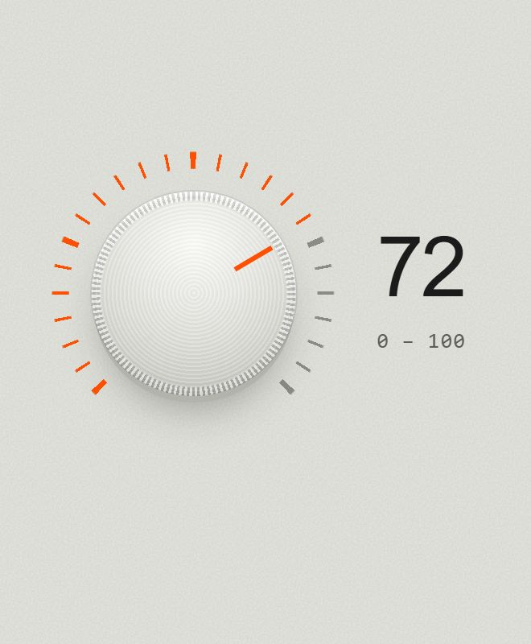
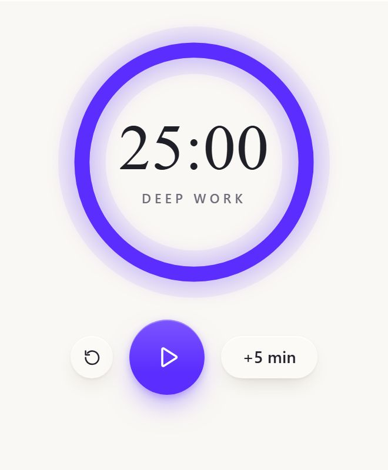
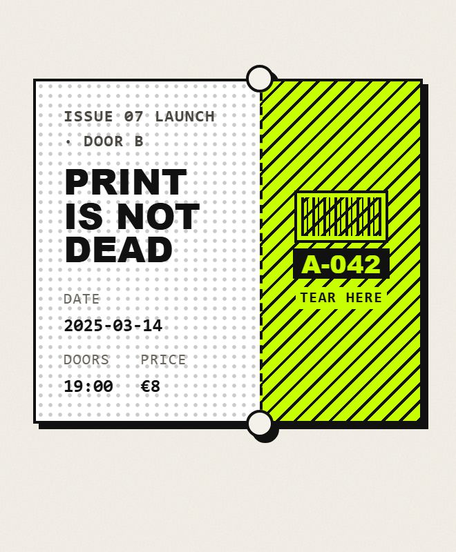
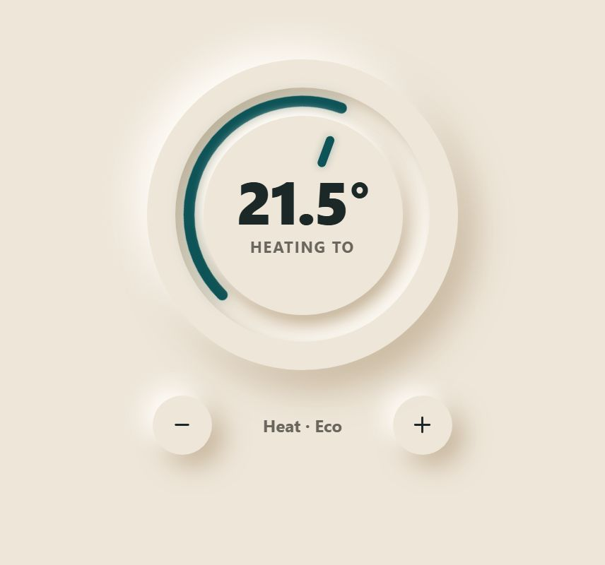
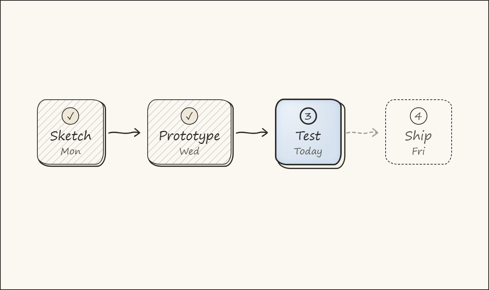
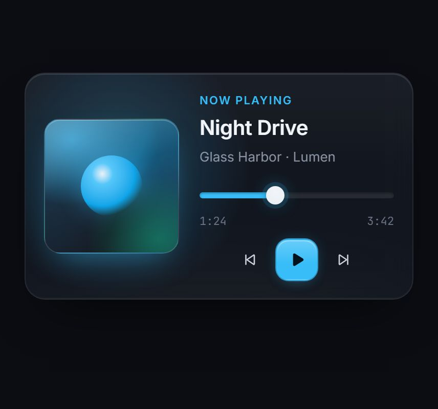
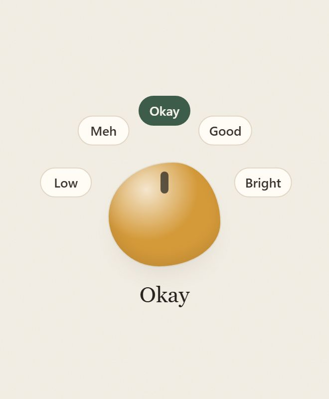
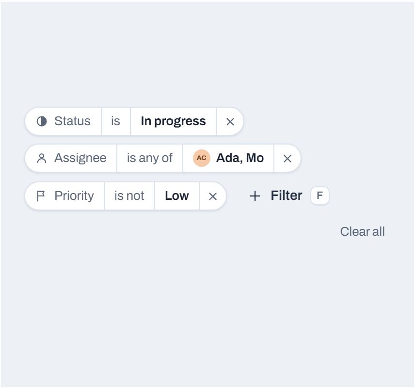
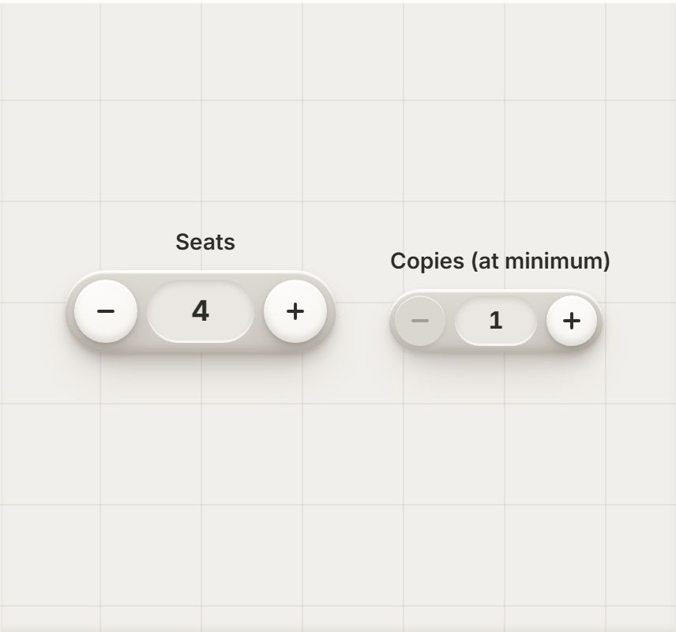
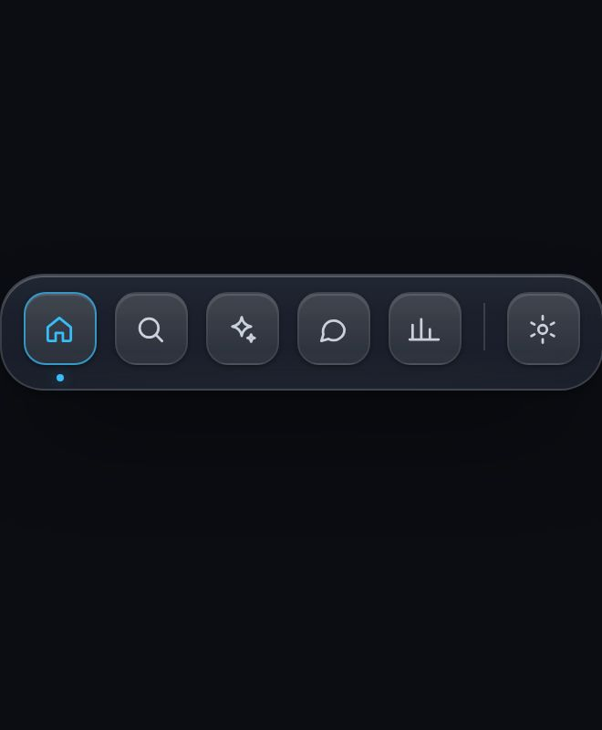
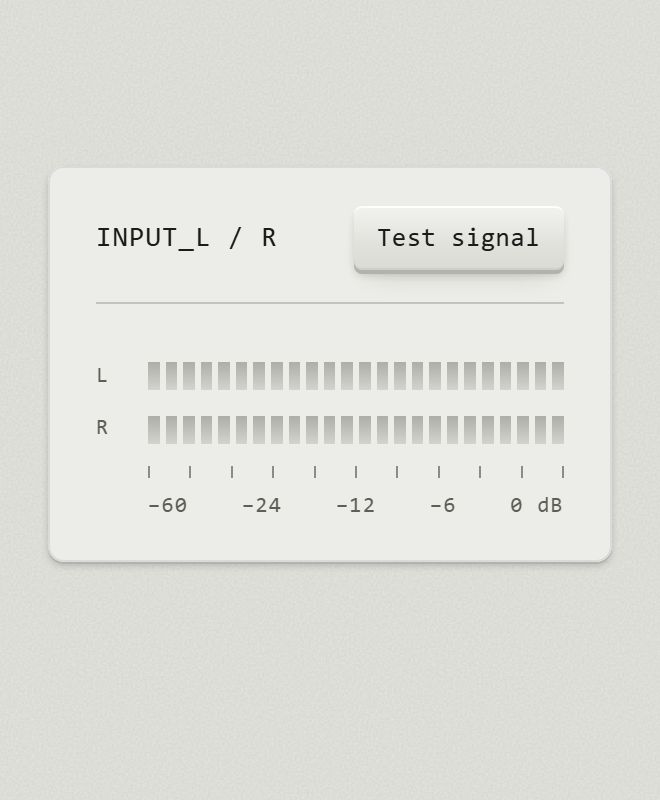
A live pattern in the component collection: every card is the identical HTML, only the class prefix changes. Interact directly below, toggle Dark mode, or open Code to inspect across all nine languages.
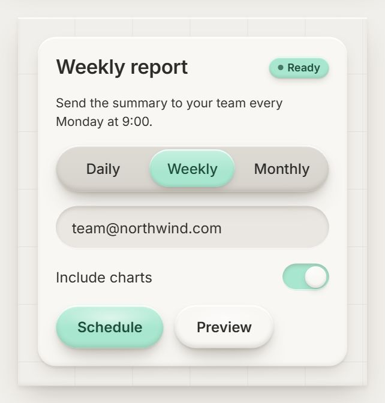
.clay-btn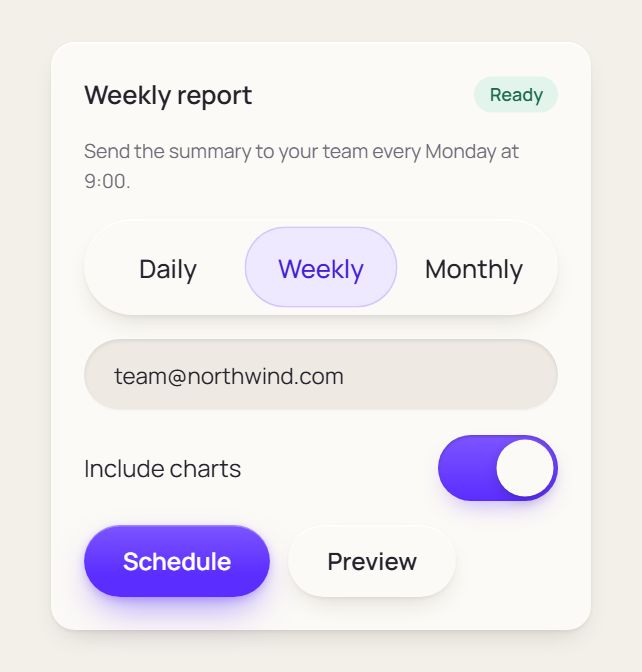
.lilac-btn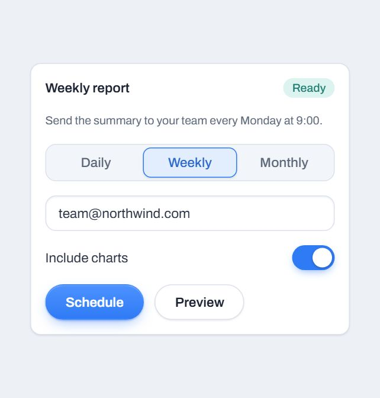
.atelier-btn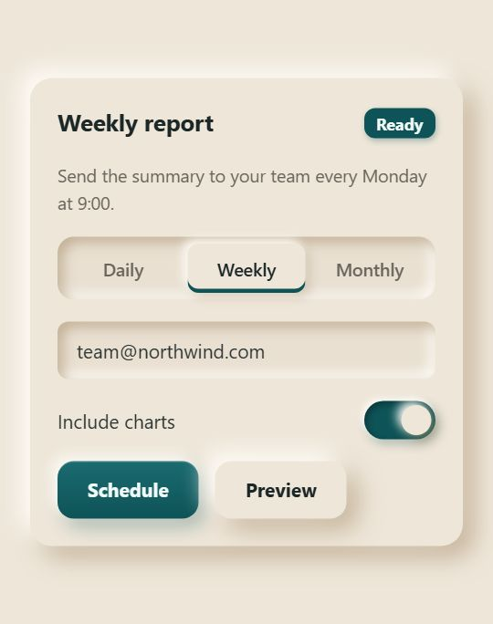
.tactile-btn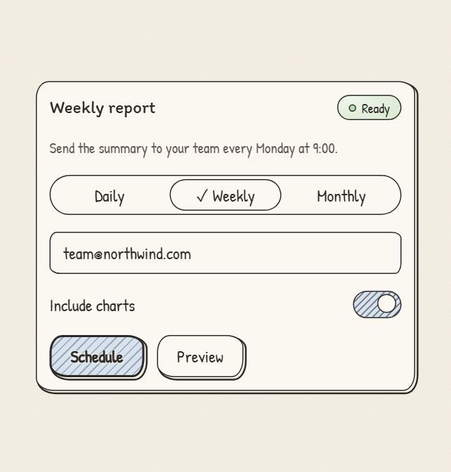
.sketch-btn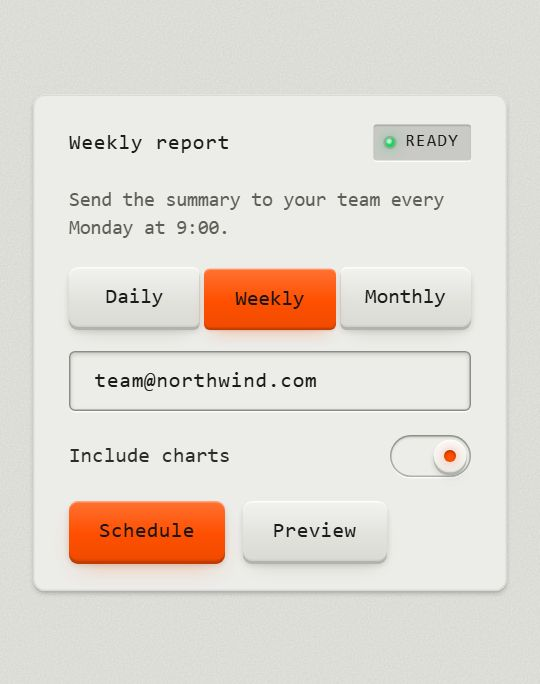
.braun-btn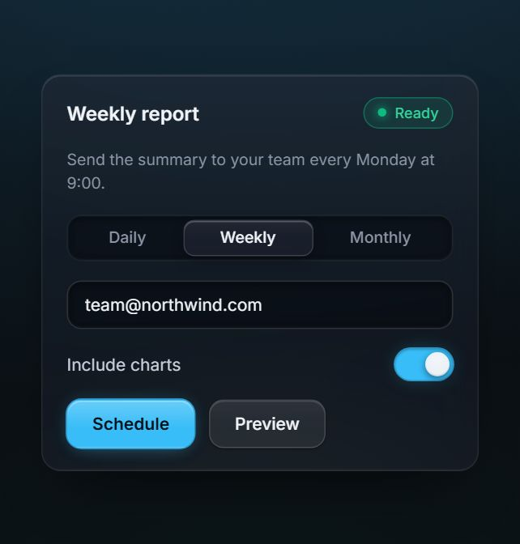
.obsidian-btn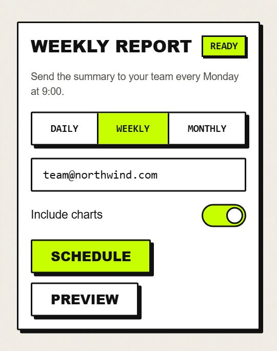
.zine-btn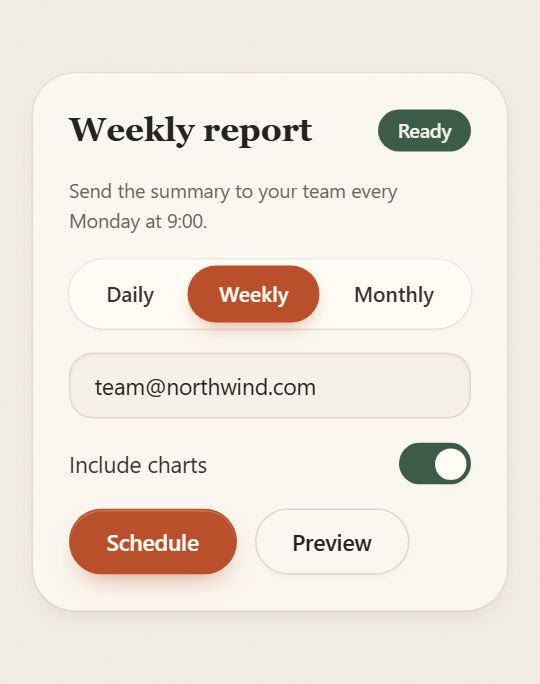
.terrarium-btnPlain HTML, CSS custom properties and optional vanilla JS. No build step and no runtime dependencies, only web fonts.
Use the CDN copy of any language's entry file and compose with its prefixed classes.
<link rel="stylesheet" href="https://cdn.jsdelivr.net/gh/seiya058904/ui-design-languages@main/lilac/css/lilac.css"> <button class="lilac-btn lilac-btn--primary">Start</button>
Each language folder is self-contained. Tokens live in tokens/tokens.json; one script rebuilds the CSS.
tactile/ tokens/ css/ js/ examples/ DESIGN.md AGENTS.md README.md node scripts/build-tokens.mjs tactile
DESIGN.md is the spec, AGENTS.md the rules. On the component wall every card hands over its complete source: one runnable file and a ready-made prompt.
Build my settings page with Atelier. Read atelier/DESIGN.md and atelier/AGENTS.md, link atelier/css/atelier.css, and compose only with .atelier-* classes.
Code and docsMIT. Use, change and ship them in commercial work.
TypeFunnel Display and Funnel Sans for the library's grey theme, Geist and Geist Mono for its dark one; Inter, Cormorant Garamond, Manrope, Archivo, Plus Jakarta Sans, Itim, Patrick Hand, Space Grotesk, IBM Plex Mono, JetBrains Mono, Archivo Black, Space Mono and Fraunces for the languages. All via Google Fonts, SIL Open Font License.
IconsDrawn for this repository as inline SVG, MIT.
ReferencesThe images that inspired each language are not redistributed; every language is an original implementation. How a language is made